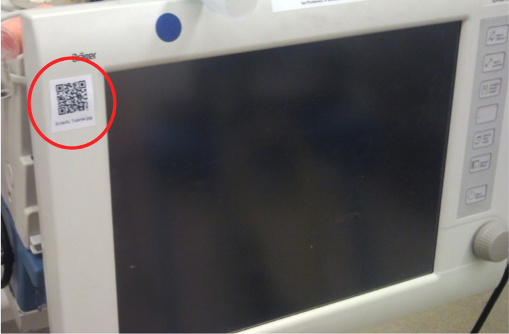

You probably have reached this website through a link (QR code or otherwise) from the MD PnP's QR Codes for Medical Device Point-of-Care Product Information demo.
This web page has been created for demonstration purporses only and does not substitute nor intents to substitute any manufacturer or vendor official resources pages. Any medical device manufacturer's resources used or linked here are publicly available and used for demonstration purporses only. By using any product or resource form a specific manufacturer or vendor we intent no misrepresentation of the capabilities of any mentioned resource or product. Manufacturers and/or medical devices may have been chosen based on either completely random criteria or availability of public resources for this demo.
The Drager Apollo Anesthesia Workstation has been selected to be part of the demo because it is one of the devices avaliable at the MD PnP's lab in Cambridge, Massachusetts
|  | |
|
A: The Apollo uses a piston ventilator, which eliminates the need for drive gas. However, the fresh gas flow and anesthetic vapor function similar to the Fabius GS and older Draeger products. There should always be some fresh gas flow to replace consumed Oxygen and to replensish lost volume from leaks.
{kind=link}